Stepping VLMs onto the Court : Benchmarking Spatial Intelligence in Sports

Abstract
Sports have long attracted broad attention as they push the limits of human physical and cognitive capabilities. Amid growing interest in spatial intelligence for vision-language models (VLMs), sports provide a natural testbed for understanding high-intensity human motion and dynamic object interactions. To this end, we present CourtSI, the first large-scale spatial intelligence dataset tailored to sports scenarios. CourtSI contains over 1M QA pairs, organized under a holistic taxonomy that systematically covers spatial counting, distance measurement, localization, and relational reasoning, across representative net sports including badminton, tennis, and table tennis. Leveraging well-defined court geometry as metric anchors, we develop a semi-automatic data engine to reconstruct sports scenes, enabling scalable curation of CourtSI. In addition, we introduce CourtSI-Bench, a high-quality evaluation benchmark comprising 3,686 QA pairs with rigorous human verification. We evaluate 25 proprietary and open-source VLMs on CourtSI-Bench, revealing a remaining human–AI performance gap and limited generalization from existing spatial intelligence benchmarks. These findings indicate that sports scenarios expose limitations in spatial intelligence capabilities captured by existing benchmarks. Further, fine-tuning Qwen3-VL-8B on CourtSI improves accuracy on CourtSI-Bench by 23.5 percentage points. The adapted model also generalizes effectively to CourtSI-Ext, an evaluation set built on a similar but unseen sport, and demonstrates enhanced spatial-aware commentary generation. Together, these findings demonstrate that CourtSI provides a scalable pathway toward advancing spatial intelligence of VLMs in sports.
🧪 Data
🏆 Leaderboard
*If you would like to add your model's performance to the leaderboard, please contact the author.
*[parsed] denotes results extracted from model outputs using an LLM with notable instruction compliance issues.
| Models▲▼ | Overall▲▼ | Distance Measurement | Counting | Loc. | Relational Reasoning | |||||||||||||
|---|---|---|---|---|---|---|---|---|---|---|---|---|---|---|---|---|---|---|
| Cam.-Obj.▲▼ | Height▲▼ | Obj.-Line▲▼ | Obj.-Obj.▲▼ | Ball▲▼ | Player▲▼ | Obj.▲▼ | Ball-Zone▲▼ | Ball-Player▲▼ | Cam.-Player▲▼ | Player-Zone▲▼ | Player-Player▲▼ | Player-Line▲▼ | ||||||
[Until the release time (2026.3)] 💡 Although spatial intelligence models are specifically fine-tuned, we do not observe consistent improvements over their base models on CourtSI-Bench. This suggests that sports scenarios introduce additional spatial reasoning challenges not sufficiently captured by existing large-scale spatial intelligence benchmarks.
🔧 Semi-Automatic Data Engine
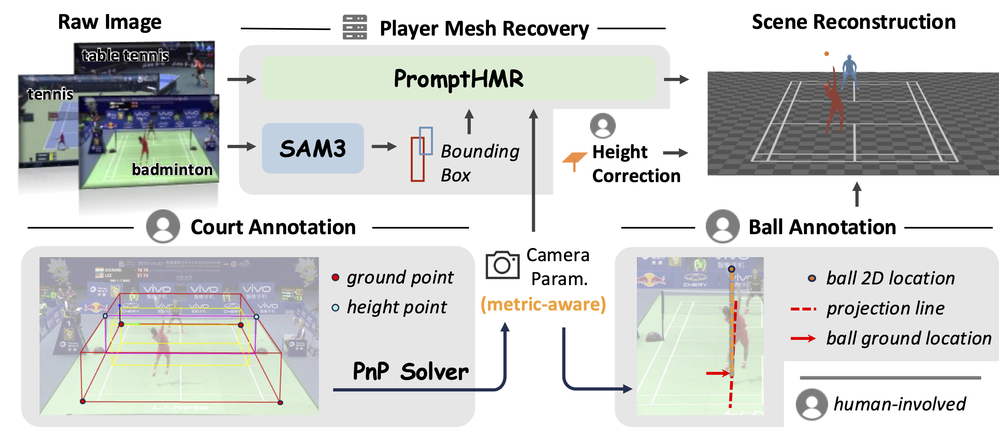
💡 By leveraging court geometry and incorporating human-in-the-loop supervision, we develop a data engine for accurate and world-grounded reconstruction in sport scenarios.
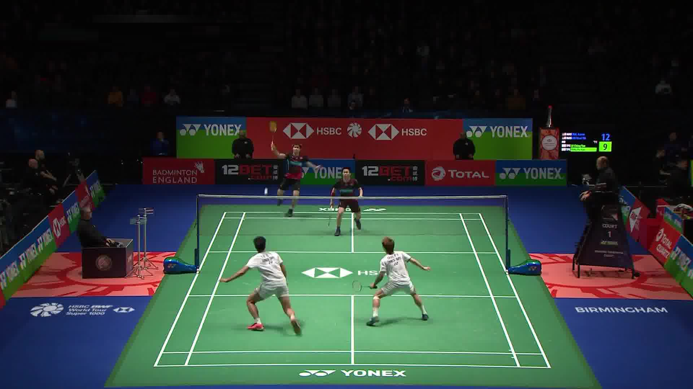
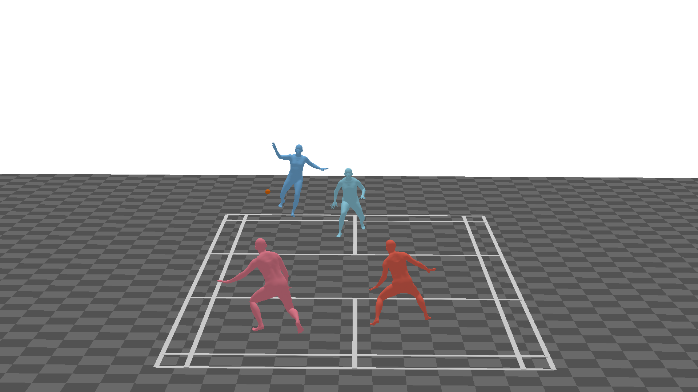
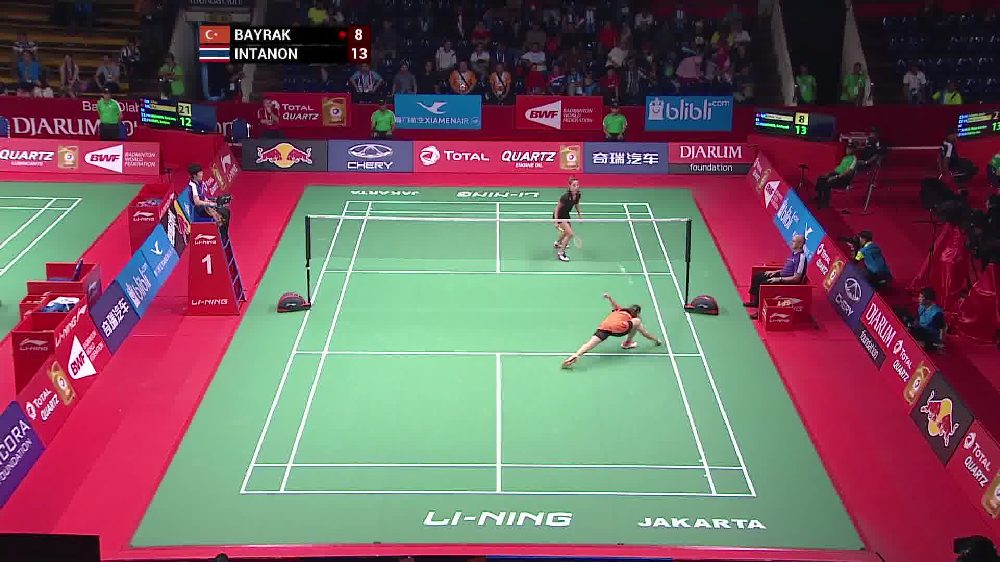
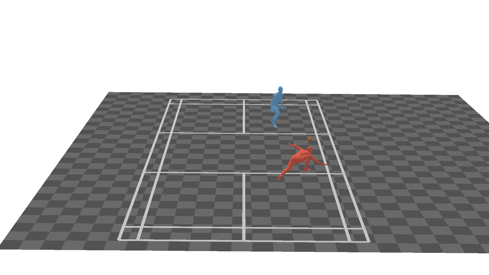
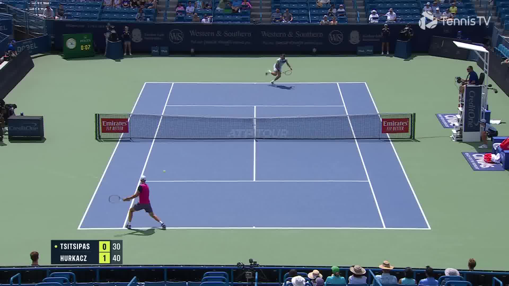
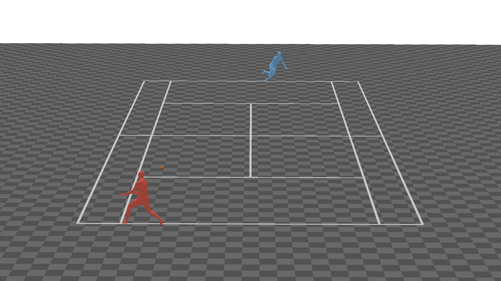
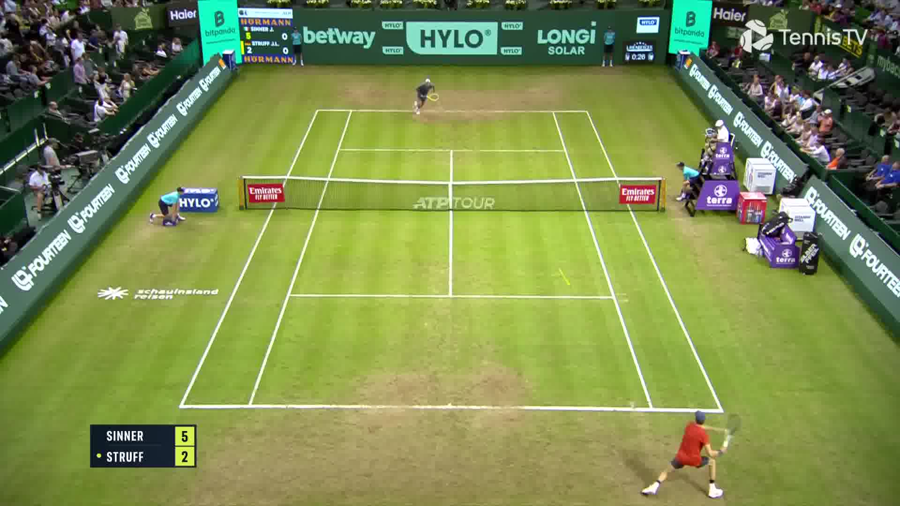
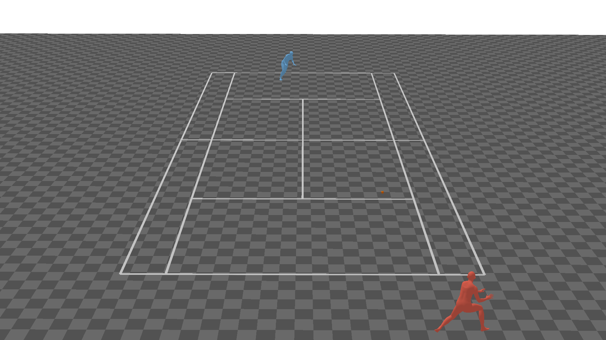
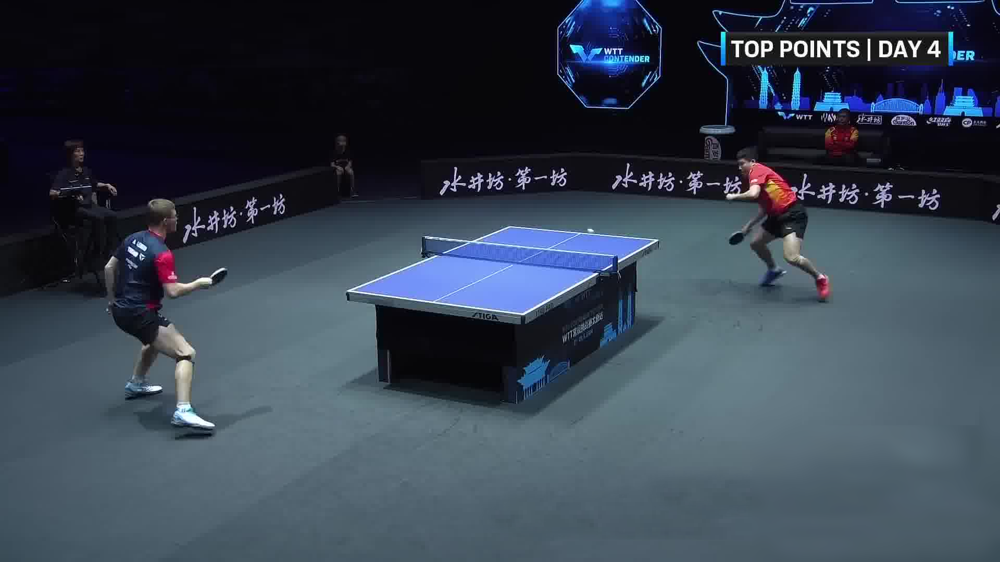
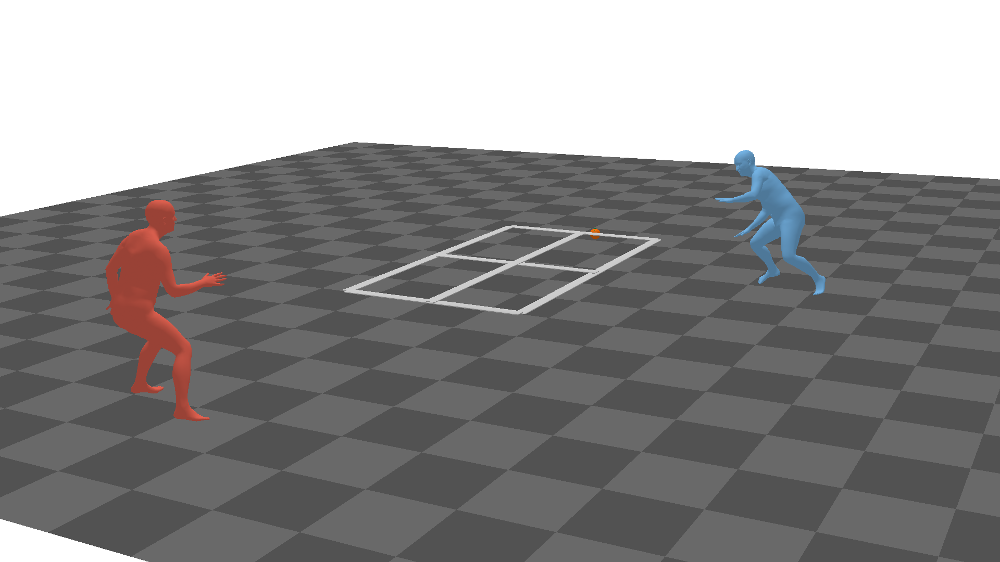
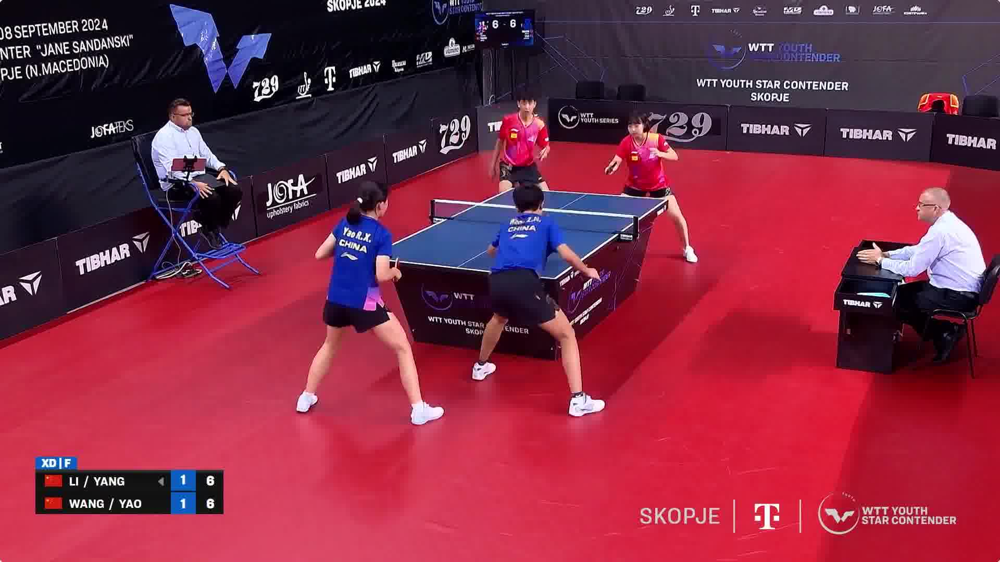
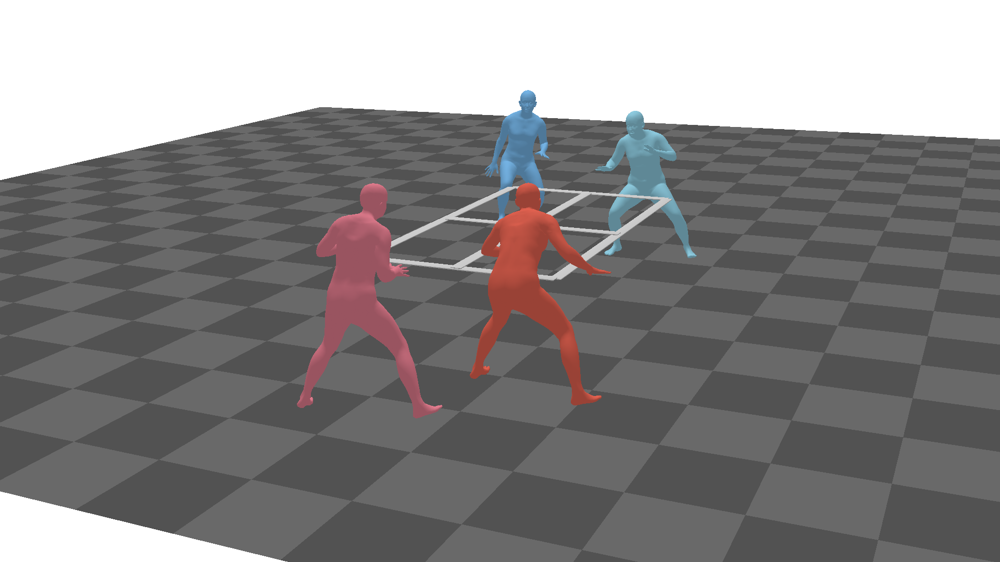
BibTeX
@article{yang2026courtSI,
title={Stepping VLMs onto the Court: Benchmarking Spatial Intelligence in Sports},
author={Yang, Yuchen and Shao, Yuqing and Huang, Duxiu and Dong, Linfeng and Liu, Yifei and Tang, Suixin and Zhou, Xiang and Gao, Yuanyuan and Wang, Wei and Zhou, Yue and Yang, Xue and Wang, Yanfeng and Sun, Xiao and Zhong, Zhihang},
journal={arXiv preprint arXiv:2603.xxxx},
year={2026}
}